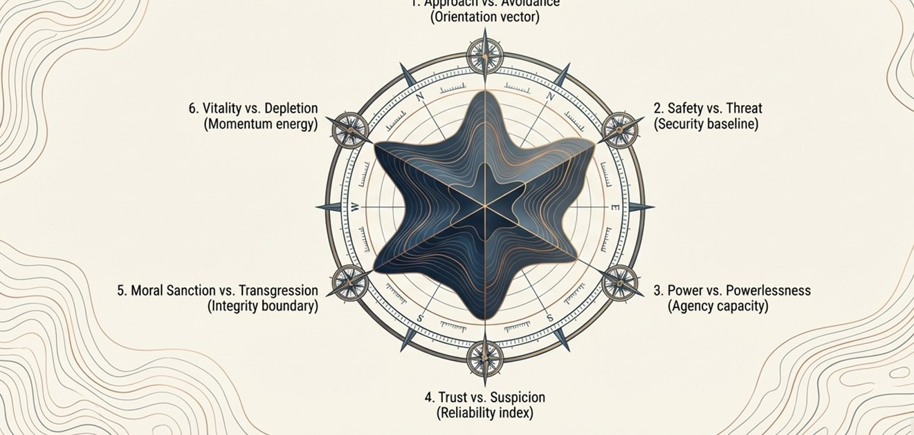
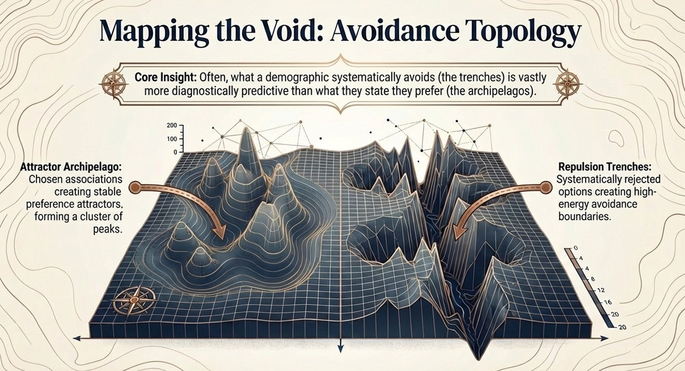
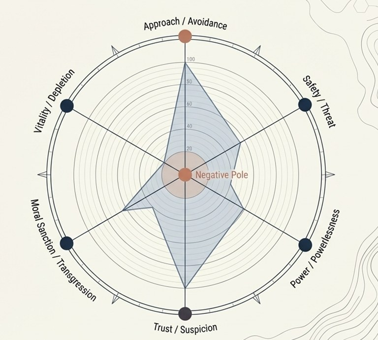

A method for measuring the structure of a population's associative meaning — where it is settled, and where it is contested.
Every measurement is organised across six axes, capturing the structure of associative orientation as a single, comparable signature.

Chosen associations create stable preference attractors. Systematically rejected options create high-energy avoidance boundaries. Often, what a population systematically avoids is more diagnostically predictive than what it states it prefers.

Each of the six axes is genuinely bipolar — a negative reading indicates dominance of the negative pole, not simply the absence of the positive. The result is a single profile across all six dimensions at once.
